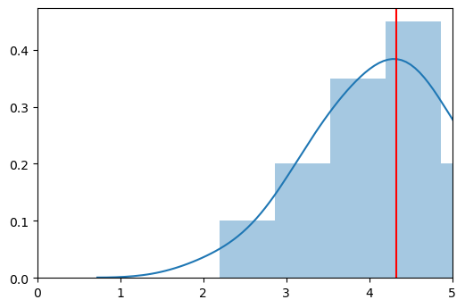
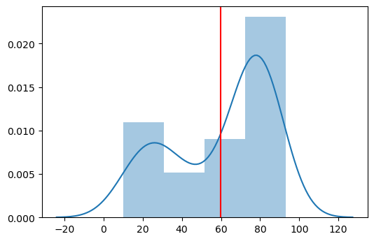
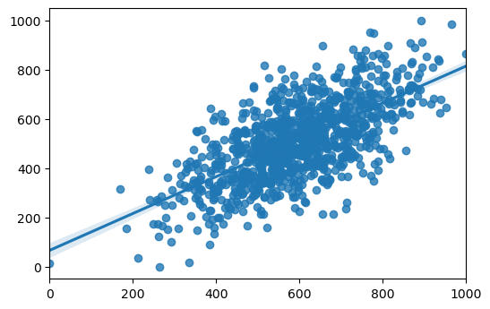
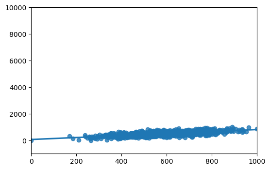
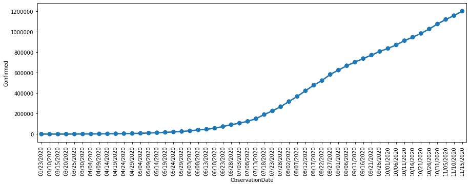
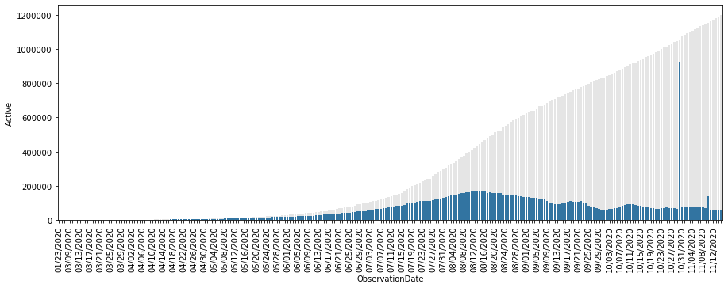
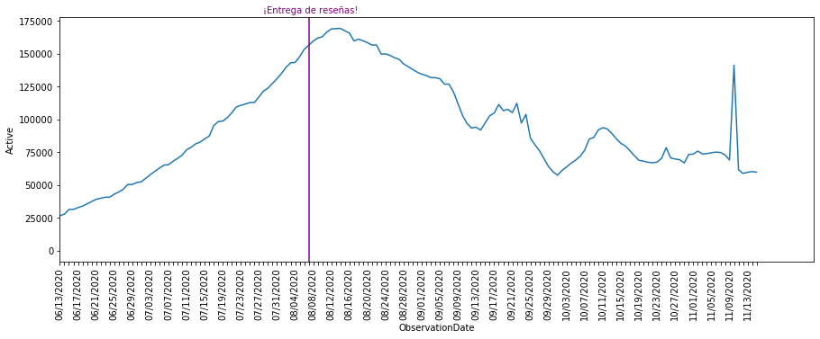

Argumentación
Argumentación con estadística
Juan R. Loaiza
Escuela de Ciencias Humanas
Universidad del Rosario
2020
### Argumentación con estadística # Introducción --- Hay estadísticas muy extrañas. * El 100% de las personas que mueren han respirado alguna vez. <!-- .element: class="fragment" --> * Más del 80% de las personas mayores de 10 años tienen pelo.<!-- .element: class="fragment" --> De cada una de estas estadísticas, podríamos creer que podemos construir un argumento. <!-- .element: class="fragment" --> * Respirar es mortal. <!-- .element: class="fragment" --> * La edad causa el crecimiento del pelo. <!-- .element: class="fragment" -->
### Argumentación con estadística # Introducción --- No debemos dejarnos engañar por el uso de la estadística. * Hay estadística bien usada y mal usada. <!-- .element: class="fragment" --> ¿Cómo podemos usar bien la estadística para argumentar? <!-- .element: class="fragment" --> * Hay que entender qué hace y qué no hace la estadística. <!-- .element: class="fragment" -->
### Argumentación con estadística # ¿Qué es la estadística? --- La estadística es una *rama de la matemática* que se encarga de estudiar cómo se comportan los *datos*. Dos tipos: * *Estadística descriptiva*: Describe un conjunto de datos. <!-- .element: class="fragment" --> * *Estadística inferencial*: Infiere hechos de una población a partir de una muestra. <!-- .element: class="fragment" -->
### Argumentación con estadística # Modelos --- Cuando hacemos estadística, buscamos construir un *modelo* de la realidad. > **Modelo**: Estructura abstracta que representa *relaciones entre variables* en el mundo. <!-- .element: class="fragment" --> Criterios para un *buen modelo*: <!-- .element: class="fragment" --> 1. Describir exitosamente un conjunto de datos. <!-- .element: class="fragment" --> 2. Predecir con cierta confianza datos nuevos. <!-- .element: class="fragment" --> 3. Hacer inferencias a propósito de la población. <!-- .element: class="fragment" -->
### Argumentación con estadística # Modelos --- **Ejemplo:** Un salón de clase tiene notas en promedio de 4.1  El *promedio* es un modelo de la nota de los estudiantes. <!-- .element: class="fragment" -->
### Argumentación con estadística # ¿Qué no hace la estadística? --- La estadística funciona a nivel general, idealmente *poblacional*. Podemos hacer algunas inferencias *probabilísticas*, ¡pero no podemos inferir (deductivamente) nada sobre los individuos. <!-- .element: class="fragment" --> > **Ejemplo:** El promedio de la clase es 4.1. Por lo tanto, mi nota será 4.1. <!-- .element: class="fragment" -->
### Argumentación con estadística # ¿Qué no hace la estadística? --- No todo modelo estadístico es bueno para describir el mundo. > **Ejemplo**: El promedio no describe distribuciones no normales. 
### Argumentación con estadística # ¿Cómo argumentar con estadística? --- ¡Es importante aprender de estadística! * Debemos aprender para qué sirve cada modelo. <!-- .element: class="fragment" --> * Promedio <!-- .element: class="fragment" --> * Mediana <!-- .element: class="fragment" --> * Regresión linear <!-- .element: class="fragment" --> ... <!-- .element: class="fragment" -->
### Argumentación con estadística # ¿Cómo argumentar con estadística? --- Distintas representaciones de los datos llevan a distintos argumentos. <div style="display: flex; justify-content: center">   </div>
### Argumentación con estadística # ¿Cómo argumentar con estadística? --- Hay efectos estadísticos triviales. > **Ejemplo**: Un estudiante saca 4.5 y 4.9 en los primeros parciales. Todos sus compañeros le felicitan. Luego saca 4.6 en el último examen. Por lo tanto, felicitarlo fue nocivo para su progreso. <!-- .element: class="fragment" --> ¡Falso! Este efecto se conoce como la *regresión a la media*. <!-- .element: class="fragment" --> * La probabilidad de que un estudiante saque notas extremas es baja. <!-- .element: class="fragment" -->
### Argumentación con estadística # ¿Cómo argumentar con estadística? --- Es importante cuidarnos de distinguir distintas cifras. <div style="display: flex; justify-content: center; height: 10em">   </div>
### Argumentación con estadística # ¿Cómo argumentar con estadística? --- Y saber cuándo tenemos un efecto real y cúando uno aparente.. <div style="display: flex; justify-content: center; height: 10em">  </div>
### Argumentación con estadística # Conclusión --- Para argumentar con estadística, debemos: * Saber bien qué nos dice cada tipo de estadística. <!-- .element: class="fragment" --> * Saber leer bien las visualizaciones. <!-- .element: class="fragment" --> * Saber qué inferencias nos permite hacer cada modelo. <!-- .element: class="fragment" --> Y en general, hay siempre qué saber *de qué se habla*. <!-- .element: class="fragment" -->
<span style="text-align: center"> ¡Mil gracias! Espero verles en el futuro en alguna otra ocasión. </span>